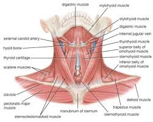
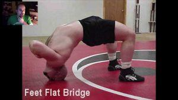
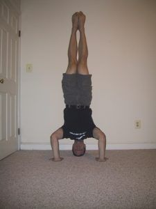

“Develop my chin? What do you mean, Larsen?” Just to clarify, I’m not talking about giving you that sculpted lantern jaw that all men want but most men can’t obtain. That’s mostly a combination of losing fat and genetics—although my colleague Jon Anthony recommends chewing mastic gum. You can try that if you want, but that’s not really what we’re here to discuss today.
No, I’m using “chin” in the boxing/martial arts sense—the ability to take a punch without going down. Anybody who follows combat sports will have heard terms related to this phenomenon: “good chin”, “hard chin”, “iron jaw”, “glass jaw”, and so forth. Many will also assume that this, much like having a defined jawline, is something that you either have or you don’t.
Wrong.
Chin?
The first misconception people have about developing the chin is the name. The ability to take a punch, in fact, does not have anything to do with the structure of your jawline at all!
A knockout or concussion occurs when the head is hit and the brain literally slams into the inside of the skull. Thus, we can surmise that the more the head moves from the blow striking it, the more susceptible the person is to a knockout.
Thus, to enhance your toughness and lessen your susceptibility to knockouts from blows to the head, you have to keep your head from moving when it’s struck. And to do that, you will have to strengthen not your jaw, or any of the muscles of your face, but your neck.

Think of the head resting on the neck similarly to a lever resting on a fulcrum. The wider and bigger the fulcrum is, the less the lever can move, and thus the less the lever can affect movement upon an external object.
Bearing in mind that I was much better at biology then I was at physics, we can thus surmise that the neck is the fulcrum, the head is the lever, and the brain is the object placed on the end of the lever that will be moved by the lever.
Thus, if we make the neck bigger and stronger, the head will move less when it is struck, and thus you will be more difficult to knock out.
The Proof
The simplest way to prove the veracity of what I’m claiming is the simple fact that many martial artists—of all stripes, whether they be strikers, grapplers, or mixed martial artists—extensively train their necks to be stronger and more durable, for this exact purpose.
Anyone who has wrestled will remember doing extensive training in bridging, as well as neck bridging. The reasons for doing this are two fold: not only does the flexibility facilitate various types of throws and pin escapes, training the neck will, in essence, make you more durable and more resistant to being dropped on your head. Similarly, any judoka or jujitsu practitioner worth his salt will train his neck extensively as well.
And let’s not forget that strikers themselves train their necks extensively. In his tome Championship Fighting, Jack Dempsey specifically refers to this as a must-do exercise. Dempsey was only knocked out once in his career. Need I say more?

The Exercises
The good thing here is that there are only two exercises you need to make yourself tougher. These are the neck bridge and the hands-free headstand.
If you have read my articles previously such as this, you will already have some background in bridging—it’s an exercise that I have repeatedly advocated, and for good reason. And to do the neck bridge is very simple:
Lay down flat on the floor in the bridge starting position. Then, rather than doing a standard bridge, push off the back of your head and roll onto your forehead. Then, cross your arms across your chest. From here, you can do one of two things. You can either hold the neck bridge for time, or do repetitions, slowly rolling all the way back and then again.
If you want to make it even harder, you can hold a weight in your unoccupied hands, although I usually do not recommend doing any exercise that puts weight directly upon the spine.
The other exercise, the hands-free headstand (or neckstand), is the other exercise. Unlike the neck bridge, this one is only one in holds for time. Go to a wall and kick into a headstand.

Then remove your hands and hold. In addition to strengthening the muscles and connective tissues of the neck, both of these exercises will also train your willpower by forcing you to endure pain.
Conclusion
What more evidence do you need? If you want to make yourself tougher and less susceptible to knock out—and why wouldn’t you?—start doing these exercises now.
Read More: A Primer On The Best Exercise You’re Not Doing